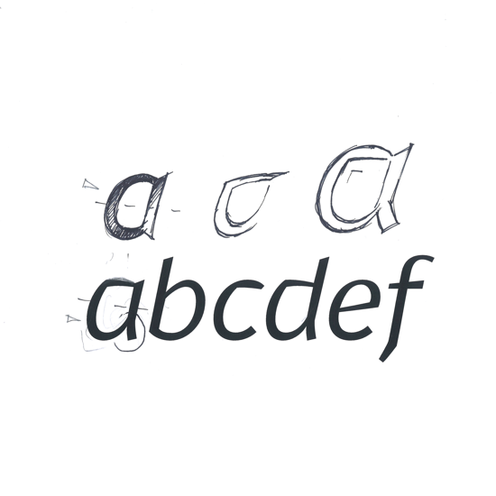
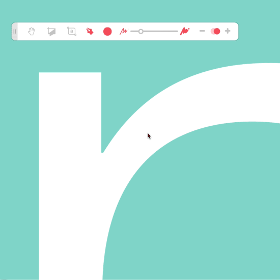

A platform
Product Design, Ux, Ui, Prototyping
In 2012 I had the chance to join the Fontyou team as product designer. Part of my job was to help build a platform that would allow type designers and type lovers to create together and exchange ideas in one place.
As you will see here, the platform we created is one element of the product I worked on with Fontyou, along with a syncing app and a font identity project.
As I’ve recently left the Fontyou team, here I propose some solutions that may be different from what their work looks like now. Shout out to the team’s new work :).

The purpose of the Fontyou platform is to help you (creative or not) discover, create, and share typography differently.
To achieve these goals, we created distinct tools and spaces that would let the user play with different aspects of the typography, and maybe even get royalties for their work.
To create this platform and these tools/spaces, we looked to our creative community, observing the ways that they use typography on a daily basis.


We started to think about the tools first, what we would need. The platform needed a way to interact with other users, to start a discussion based on typography extracts or post details,, along with a place to co-create.



We created different interactivity tools including a crop comment tool and a vectorial annotation tool leading up to a more complete vectorial drawing tool.

You can explore and discover all of the content generated and posted on Fontyou, from an inspiration post to a cropped glyph that will generate versions and lead to a final font, which you’ll find in the same section.


We tried to lead the user to a more compressed experience, using different formatting to represent each step along the way to font creation.

Timeline of a project, from a Post to a Font.

Help the user to find the object or interaction that she’s looking for by applying some format rules to Fontyou content.
The “Desk” is where you find your/other users’ work-space: projects, likes, fonts, and glyphs.